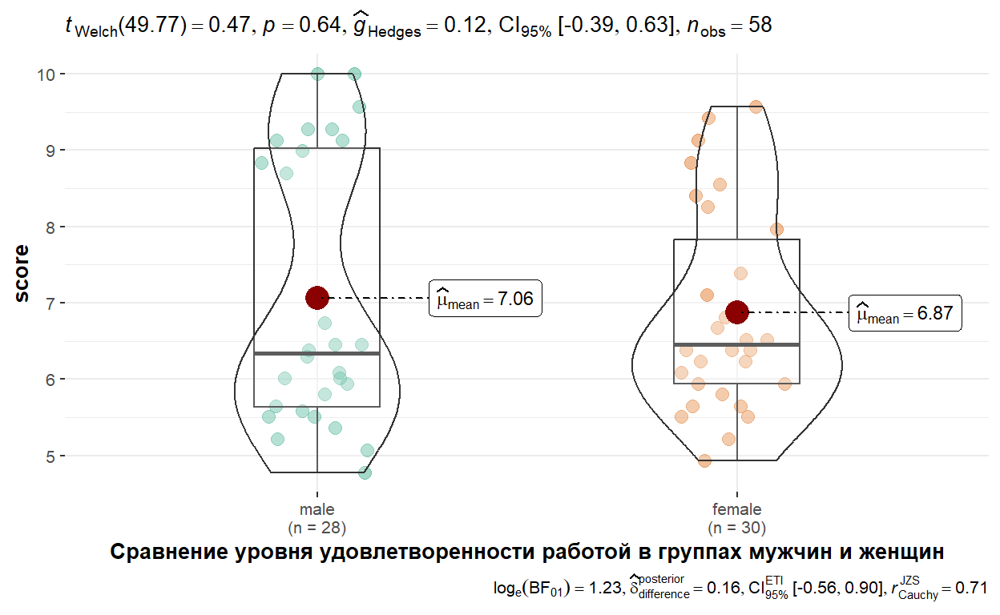
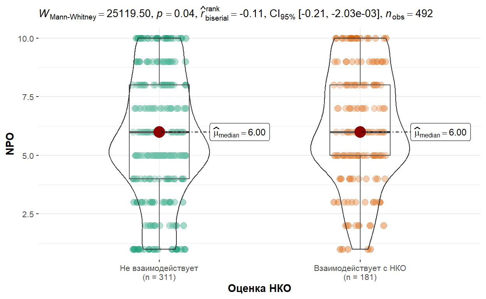
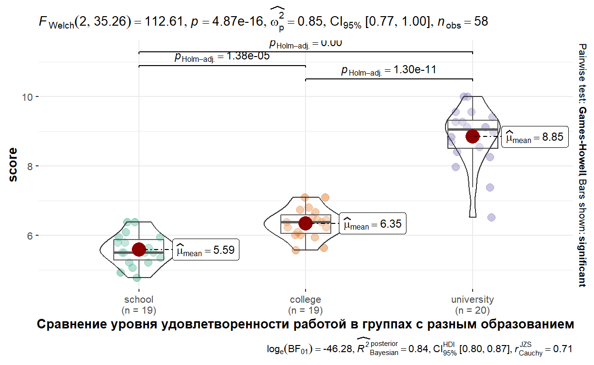
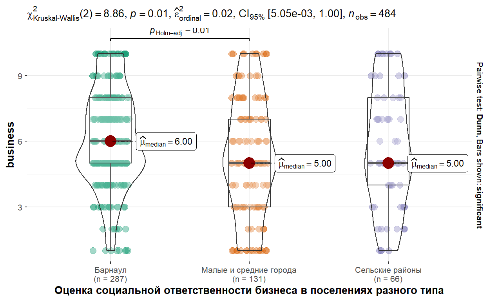

Представьтесь
Предварительные тестовые задания
Вопрос 1
Вопрос 2
Вопрос 3
Вопрос 4
Вопрос 5
Вопрос 6
Вопрос 7
Вопрос 8
Вопрос 9
Вопрос 10
Вопрос 11
Вопрос 12
Вопрос 13
Вопрос 14
Вопрос 15
Вопрос 16
Вопрос 17
Вопрос 18
Вопрос 19
Вопрос 20
Практические задания
Упражнение 1
Согласно данным комплексного наблюдения условий жизни россиян, проведенного Росстатом, время ожидания общественного транспорта достигло рекорда за девять лет и составило в 2024 году 15 минут и 48 секунд в обе стороны (округлим до 16 минут).
Вы провели аналогичное социологическое исследование в городе
Барнауле, результаты которого содержатся в data.
С помощью одновыборочного t-критерия Стьюдента выясните, отличаются ли Ваши данные от общероссийских.


t.test(data, mu = ...)t.test(data, mu = 16)Упражнение 2
В наборе данных js содержатся результаты оценки
удовлетворенности работой (переменная score). Проведите
анализ средних значений удовлетворенности в зависимости от пола
(переменная gender).
t.test(score~..., data = ...)t.test(score~gender, data = js)Упражнение 3
Используя возможности библиотеки ggstatsplot и функции
ggbetweenstats создайте график, показывающий различия в
средних значениях удовлетворенности работой у мужчин и женщин.
У Вас должно получиться следующее:

ggbetweenstats(
js,
x = ...,
y = ...,
type = "parametric",
xlab = "..."
)ggbetweenstats(
js,
x = gender,
y = score,
type = "parametric",
xlab = "Сравнение уровня удовлетворенности работой в группах мужчин и женщин"
)Упражнение 4
В наборе данных civil_society содержатся результаты
исследования о развитии гражданского общества в Алтайском крае,
проведенного в 2025-2026 году, в том числе 10-балльные шкалы,
оценивающие институциональные условия, необходимые для развития
гражданского общества.
Проведите сравнительный анализ средних оценок показателя «НКО
оказывают качественные услуги населению» (NPO) у жителей,
имеющих и не имеющих опыта взаимодействия с НКО
(NKO_link).
wilcox.test(NPO~..., data = ...)wilcox.test(NPO~NKO_link, data = civil_society)Упражнение 5
Сделайте визуализацию различий с помощью функции
ggbetweenstats. Чтобы вывести результаты критерия
Манна-Уитни, установите type="nonparametric".
У Вас должно получиться следующее:

ggbetweenstats(civil_society, NKO_link, NPO, xlab = "Оценка качества услуг НКО", type="nonparametric")ggbetweenstats(civil_society, NKO_link, NPO, xlab = "Оценка качества услуг НКО", type="nonparametric")Упражнение 6
Продолжаем работать с данными об удовлетворенности работой
js. В переменной education_level содержится
информация об образовании. В ней три уровня:
- school (средняя школа)
- colledge (колледж)
- university (университет)
С помощью однофакторного дисперсионного анализа проведите анализ
различий в среднем уровне удовлетворенности в зависимости от образования
участника исследования. Сохраните результаты в res и
выведите их с помощью summary().
res<-aov(score~..., data = ...)
summary(...)res<-aov(score~education_level, data = js)
summary(res)Упражнение 7
Между какими именно группами сотрудников по образованию различия
значимы?. Проведите множественные сравнения методом
tukey_hsd.
Узнать
больше о функции tukey_hsd.
tukey_hsd(js, score ~ education_leveltukey_hsd(js, score ~ education_level)Упражнение 8
Используя возможности библиотеки ggstatsplot и функции
ggbetweenstats создайте график, показывающий различия в
средних значениях удовлетворенности работой у сотрудников с разным
образовательным уровнем.
У Вас должно получиться следующее:

ggbetweenstats(
js,
x = ...,
y = ...,
type = "parametric",
xlab = "..."
)ggbetweenstats(
js,
x = education_level,
y = score,
type = "parametric",
xlab = "Сравнение уровня удовлетворенности работой в группах с разным образованием"
)Упражнение 9
На основе данных civil_society проведите анализ средних
оценок социальной ответственности бизнеса (переменная
business) в группах жителей, отличающихся местом проживания
(переменная place). Нужно провести анализ по трем
группам:
- Барнаул
- Другие города (малые и средние)
- Сельские районы
Для общей оценки сделайте тест Краскела-Уоллиса
kruskal.test(), для парных сравнений - тест
pairwise.wilcox.test() с поправкой Бенджамини-Хохберга
p.adjust(method = "BH") — процедура Бенджамини-Хохберга
для контроля FDR (False Discovery Rate) - ложноположительных результатов
при множественных сравнениях.
BH менее строгая альтернатива Бонферрони, сохраняет статистическую мощность.
Алгоритм работы
- Сортировка p-значений: \(p_{(1)} ≤ p_{(2)} ≤ ... ≤ p_{(m)}\)
- Коррекция: \(\hat{p}i = \min\left(1, \frac{m \cdot p{(i)}}{i}\right)\)
- Кумулятивный минимум для монотонности Большая обзорная статья про разные виды поправок
kruskal.test(business~..., data = ...)
pairwise.wilcox.test(...$business, ...$place, p.adjust.method = "BH")kruskal.test(business~place, data = civil_society)
pairwise.wilcox.test(civil_society$business,civil_society$place,p.adjust.method = "BH")Упражнение 10
С помощью функции ggbetweenstats создайте график,
визуализирующие результаты анализа из упражнения 9.
У Вас должно получиться следующее:

ggbetweenstats(
js,
x = ...,
y = ...,
type = "parametric",
xlab = "..."
)ggbetweenstats(
js,
x = education_level,
y = score,
type = "parametric",
xlab = "Сравнение уровня удовлетворенности работой в группах с разным образованием"
)Сохранить ответы
- Нажмите на кнопку, чтобы загрузить файл, содержащий Ваши ответы, в формате HTML.
- Сохраните файл на компьютере, а потом загрузите его в качестве ответа на странице курса.
(Если файл не загружается, попробуйте сохранить его, нажав правую кнопку мыши и выбрав "Сохранить ссылку как...")